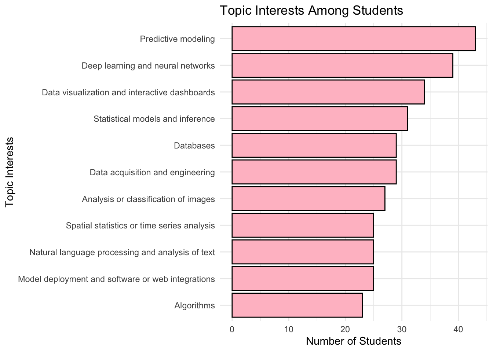
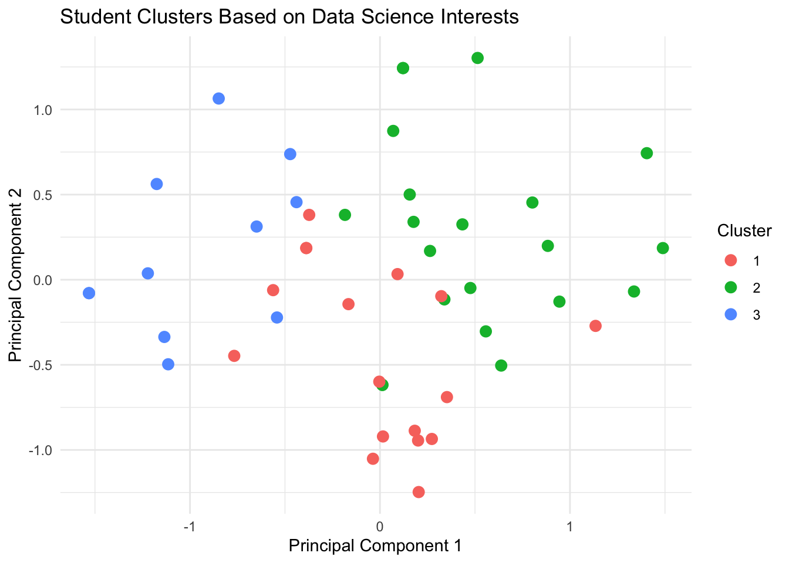
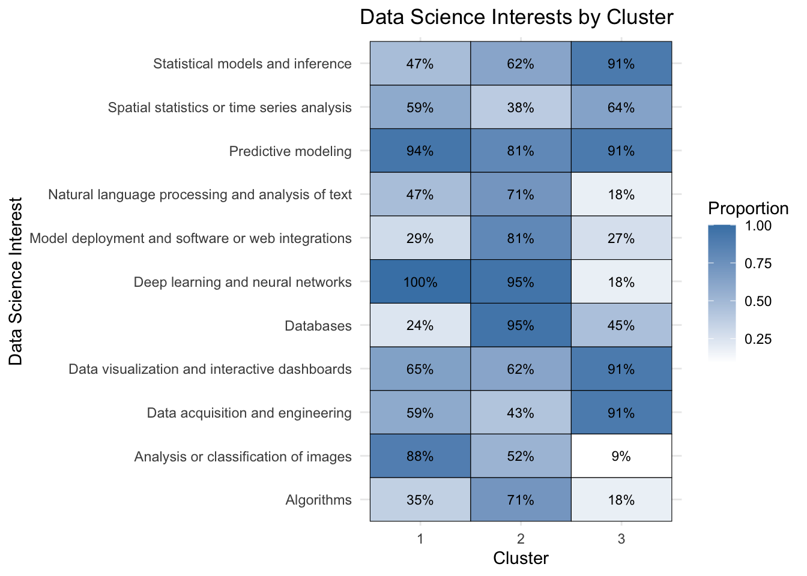
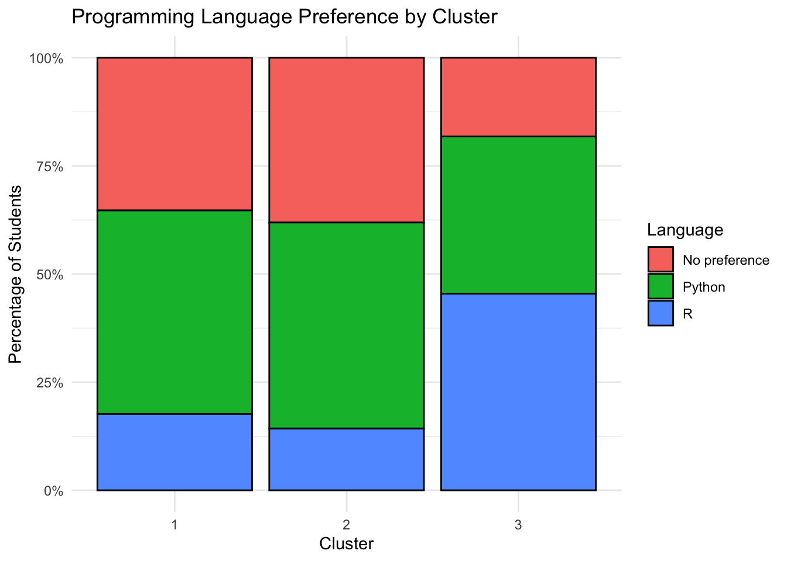

“Turn the 11 areas options into yes/no columns and cluster the students (hierarchical clustering or k-modes), or reduce with PCA/MCA and plot. What I’d look for: whether a”modern ML” group (deep learning, images, NLP, deployment) separates from a “classical stats” group (inference, time series, visualization). Follow-up: check whether the clusters differ in language preference or in industry vs. lab.”
Can we identify distinct groups of students based on their data science interests, and how do these groups differ in their programming preferences and project goals?”
library(tidyverse)
Warning: package 'ggplot2' was built under R version 4.5.2
Warning: package 'tibble' was built under R version 4.5.2
Warning: package 'tidyr' was built under R version 4.5.2
Warning: package 'readr' was built under R version 4.5.2
Warning: package 'purrr' was built under R version 4.5.2
Warning: package 'dplyr' was built under R version 4.5.2
Warning: package 'lubridate' was built under R version 4.5.2
── Attaching core tidyverse packages ──────────────────────── tidyverse 2.0.0 ──
✔ dplyr 1.2.1 ✔ readr 2.2.0
✔ forcats 1.0.1 ✔ stringr 1.6.0
✔ ggplot2 4.0.3 ✔ tibble 3.3.1
✔ lubridate 1.9.5 ✔ tidyr 1.3.2
✔ purrr 1.2.2
── Conflicts ────────────────────────────────────────── tidyverse_conflicts() ──
✖ dplyr::filter() masks stats::filter()
✖ dplyr::lag() masks stats::lag()
ℹ Use the conflicted package (<http://conflicted.r-lib.org/>) to force all conflicts to become errors
background <-read_csv('../data/background-clean.csv', show_col_types =FALSE)interest <-read_csv('../data/interest-clean.csv', show_col_types =FALSE)# Split the interests by comma, clean the labels, and count theminterest_counts <- interest %>%separate_rows(areas, sep =",") %>%mutate(areas =str_remove(areas, ",?\\s*generally")) %>%mutate(areas =str_trim(areas)) %>%filter(!is.na(areas), areas !="", areas !="generally") %>%count(areas, sort =TRUE)# Graph the interestsggplot(interest_counts, aes(x =reorder(areas, n), y = n)) +geom_col(fill ="pink", color ="black") +coord_flip() +labs(title ="Topic Interests Among Students",x ="Topic Interests",y ="Number of Students" ) +theme_minimal()

#I redid this so can someone please run it to make sure it works on their end. It was working when I ran the code but when I tried to render it it stopped. I finally got it to work but can someone else please take a look (and delete this comment after)#What areas do students normally chose together? interest_long <- interest %>%mutate(student =row_number()) %>%separate_rows(areas, sep =",") %>%mutate(areas =str_trim(areas)) %>%filter(!is.na(areas), areas !="", areas !="generally") %>%distinct(student, areas)interest_binary <- interest_long %>%mutate(selected =1) %>%pivot_wider(names_from = areas,values_from = selected,values_fill =0 )interest_matrix <- interest_binary %>%select(-student)set.seed(123)clusters <-kmeans(interest_matrix, centers =3)interest_binary$cluster <- clusters$clustercluster_summary <- interest_binary %>%select(-student) %>%group_by(cluster) %>%summarise(across(everything(), mean), .groups ="drop")pca <-prcomp(interest_matrix)cluster_plot <-as.data.frame(pca$x[, 1:2])cluster_plot$cluster <-as.factor(clusters$cluster)ggplot(cluster_plot, aes(x = PC1, y = PC2, color = cluster)) +geom_point(size =3) +labs(title ="Student Clusters Based on Data Science Interests",x ="Principal Component 1",y ="Principal Component 2",color ="Cluster" ) +theme_minimal()

#Cluster 1 Red: Students who commonly selected deep learning and image analysis.#Cluster 2 Green: Students who commonly selected databases, deep learning, and model deployment#Cluster 3 Blue: Students who commonly selected statistics, visualization, and data acquisition
#What do the clusters mean cluster_graph <- cluster_summary %>%pivot_longer(cols =-cluster,names_to ="Interest",values_to ="Percentage" )ggplot(cluster_graph, aes(x =factor(cluster), y = Interest,fill = Percentage)) +geom_tile(color ="black") +geom_text(aes(label =paste0(round(Percentage *100), "%")),size =3) +scale_fill_gradient(low ="white", high ="steelblue") +labs(title ="Data Science Interests by Cluster",x ="Cluster",y ="Data Science Interest",fill ="Proportion" ) +theme_minimal()

#What language does every cluster prefer interest_binary$cluster <- clusters$clusterinterest_language <- interest %>%mutate(student =row_number()) %>%left_join( interest_binary %>%select(student, cluster),by ="student" )ggplot(interest_language,aes(x =factor(cluster), fill = language)) +geom_bar(position ="fill", color ="black") +scale_y_continuous(labels = scales::percent) +labs(title ="Programming Language Preference by Cluster",x ="Cluster",y ="Percentage of Students",fill ="Language" ) +theme_minimal()

# Compare project goals across clustersinterest_goals <- interest %>%mutate(student =row_number()) %>%left_join( interest_binary %>%select(student, cluster),by ="student" )ggplot(interest_goals, aes(x =factor(cluster), fill = type)) +geom_bar(position ="fill", color ="black") +scale_y_continuous(labels = scales::percent) +labs(title ="Project Goal Preference by Cluster",x ="Cluster",y ="Percentage of Students",fill ="Project Goal" ) +theme_minimal()